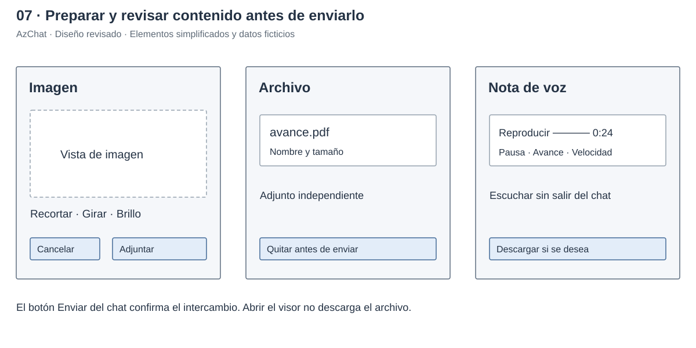

Paso 10 de 12 · Diseño de interfaz
Cómo se usa AzChat
Bocetos, navegación y confirmaciones de las pantallas.
Organización de las pantallas
La navegación debe ayudar al estudiante a localizar a un compañero, abrir su conversación y volver al listado sin perder el contexto del trabajo universitario.
Se propone una lista de conversaciones a la izquierda y el historial a la derecha. En computadora, Ajustes podrá abrirse junto al chat; en celular se mostrará una vista a la vez, con un control claro para volver.
Ayuda breve y confirmaciones
El botón ! permitirá consultar indicaciones sin llenar la pantalla de instrucciones. Los errores y las consecuencias de acciones importantes deberán permanecer visibles. El correo de recuperación será opcional y tendrá su propia verificación.
Bocetos del diseño
Los esquemas siguientes muestran la distribución, el color y el contenido de ejemplo. Se conserva la línea visual de paneles unidos; el acceso incorpora una pequeña ampliación para el correo opcional y la ayuda.
Esquemas de las pantallas
 Ampliar boceto
Ampliar boceto Ampliar boceto
Ampliar boceto Ampliar boceto
Ampliar boceto Ampliar boceto
Ampliar boceto Ampliar boceto
Ampliar bocetoExplorar el boceto
Abrir prototipo de planificación
El prototipo permite explorar acceso y chat privado con datos ficticios. Las herramientas de imágenes, voz, perfil y recuperación se especifican en los apartados de esta página.
Recorrido de una coordinación académica
- Ingresar y buscar al compañero o crear el grupo del equipo.
- Abrir la conversación, escribir el avance y revisar el material antes de compartirlo.
- Consultar respuestas e historial; volver a Chats para cambiar de conversación.
- Usar Perfil y Ajustes para gestionar la cuenta; las indicaciones ! explican cada sección sin ocupar el historial.
Imágenes y materiales del curso
La conversación tendrá controles separados para imágenes y archivos. Seleccionar, arrastrar o pegar una imagen abrirá la previsualización y el editor antes de subirla. El estudiante podrá recortar, ampliar, desplazar, girar, reflejar o ajustar el brillo; confirmar añadirá el resultado al pendiente y cancelar lo descartará.
Las imágenes enviadas mostrarán miniaturas. Pulsarlas abrirá un visor con zoom y un botón de descarga explícita. Abrir el visor no debe cambiar de página ni iniciar una descarga; Atrás o Escape lo cerrará conservando la conversación.
Notas de voz para los compañeros
El micrófono pedirá permiso al pulsarlo. Detener la grabación dejará un audio pendiente para escucharlo antes de enviar; cancelar, salir del chat o pasar la página a segundo plano detendrá la captura. Se requerirá HTTPS o localhost y se ofrecerá adjuntar un archivo de audio como alternativa.
El reproductor integrado tendrá pausa, avance, duración, velocidad y descarga. La llegada de nuevos mensajes no debe reiniciar el audio que el estudiante esté escuchando.
Perfil y nombres privados
Perfil permitirá cambiar foto, nombre y descripción. La foto se encuadrará en proporción cuadrada con arrastre, flechas y zoom antes de guardarse. Las fotos de otros compañeros podrán abrirse en el visor.
La información de un contacto permitirá asignarle un nombre privado. Ese nombre se usará en la lista, la cabecera y la identificación del autor para quien lo guardó; no alterará el perfil del compañero ni la vista de otros estudiantes.
Grupos y preferencias del estudiante
La información del grupo reunirá nombre, descripción, foto, participantes y roles. Los cambios administrativos se mostrarán solo a quien tenga ese rol; salir exigirá dejar otro administrador cuando queden miembros.
En escritorio, Ajustes podrá permanecer como columna junto al chat; en celular tendrá su propia sección. Agrupará apariencia clara, oscura o del sistema, Enter para enviar, mensajes compactos, sonido, notificaciones, instalación, exportación y seguridad. Las preferencias de cuenta se conservarán; los permisos de micrófono, sonido y push dependen también del dispositivo.
Recuperación y confirmaciones
El ingreso ofrecerá recuperar la contraseña. El estudiante revisará su cuenta y el correo propuesto antes de confirmar. La interfaz distinguirá espera de aprobación, código enviado, código vencido, rechazo y cambio autorizado; mostrar un mensaje de aprobación no debe anunciar que la contraseña ya cambió.
Registro y Ajustes permitirán un correo opcional con verificación. Los campos de contraseña tendrán mostrar u ocultar y confirmación cuando corresponda. La ayuda ! explicará el paso; los errores y las consecuencias de aprobar o cambiar una clave permanecerán visibles. El circuito interno se detalla en P9.
Exportación e instalación
El estudiante podrá exportar todos sus chats o una selección desde Ajustes, y un chat desde su información. El TXT incluirá autores, fechas, referencias de respuesta y nombres de archivos, sin incorporar los binarios ni el contenido de mensajes eliminados.
Añadir a la pantalla de inicio ofrecerá instalación cuando el navegador lo permita o indicaciones para hacerlo. Los avisos requerirán permiso explícito y sesión vigente. Silenciar un chat también silenciará su aviso push; las notificaciones no mostrarán el texto privado del mensaje.
Boceto de las herramientas de intercambio


Ampliar diagramaDocumentos y modelos
Consultar la documentación completa en PDF. Esta página y el documento del paso describen el mismo diseño del sistema.